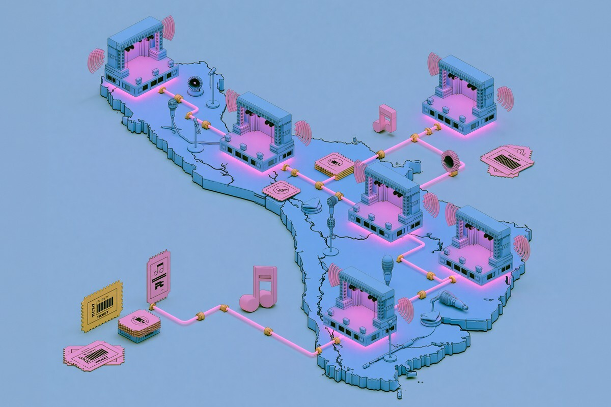
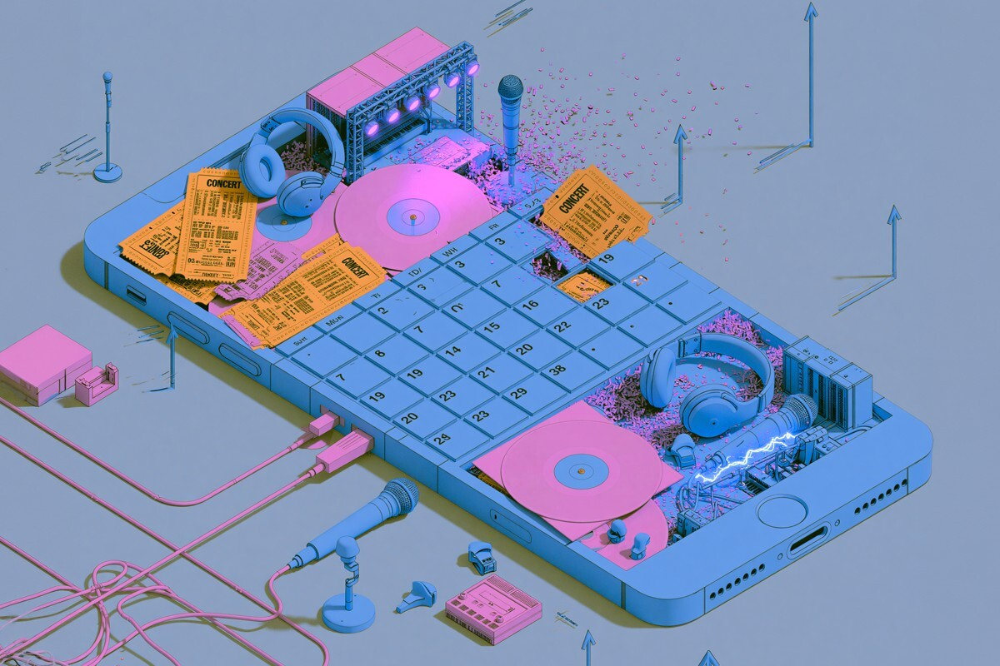

Algunos de los conciertos imperdibles de este 2026
Parte 2
Parte 2

El hecho de que estemos entrando al mes de julio no se puede creer. Pero lo que tampoco se puede creer es la cantidad de artistas que han confirmado conciertos en Chile para los próximos meses. Y sabemos que se seguirán sumando nombres al diverso line-up que decora este 2026.
En la primera parte revisamos qué shows estarían realizándose en el país desde abril hasta junio, ahora le daremos vuelta a los próximos meses, desde julio a septiembre. ¡Vamos!
Damos el puntapié inicial con los clásicos japoneses Asian Kung-Fu Generation, quienes con su gira 30th Anniversary andarán nuevamente por estos territorios, presentándose en el Teatro Caupolicán para celebrar junto a sus fieles fans chilenos tres décadas de una exitosa trayectoria musical el próximo 3 de julio.
Quedan muy poquitas entradas, así que si no te quieres perder un show que visitará los más grandes éxitos de esta queridísima banda, dale un vistazo a la página de PuntoTicket.

A mediados de mes le toca el turno a uno de los grupos nacionales más queridos del país. Algunos de los “personajes favoritos de los niños de 31 Minutos” se estarán presentando por todo Chile con su tour nacional Radio Guaripolo 2. Las marionetas y su tremendo repertorio musical agendaron varias fechas para disfrutar con las familias que crecieron con este inolvidable programa televisivo. ¿Dónde los podrán ver? En Concepción (17 de julio), Temuco (18 de julio), Puerto Montt (19 de julio), Iquique (25 de julio) y Antofagasta (1 de agosto).
Para más información sobre las fechas, localidades y la disponibilidad de entradas, puedes revisar la página de PuntoTicket.
Rosalía debe ser uno de los espectáculos más esperados del año. Teniendo como antecedente uno de los álbumes más aclamados del 2025, la española agendó cuatro fechas para su show LUX Tour en el Movistar Arena. Con un sold out total, la cantante se prepara para los días 24, 25, 27 y 29 de julio con un concierto de alto nivel (al menos así lo hemos visto todos en los muchos vídeos que fans han logrado grabar de sus conciertos para el LUX Tour en otros países).
No nos pondremos a discutir mucho más sobre la belleza que es LUX, porque eso puedes revisarlo tú mismo a través de este link. ¿Vas?
Nos movemos al mes de agosto, donde las novedades también se encuentran a la orden del día.
La Brígida Orquesta con Ana Tijoux se unen para una jornada increíble en el Teatro Coliseo. Los dos monstruos del hip-hop chileno se presentarán el próximo 8 de agosto, repitiendo el éxito que vivieron en enero de este año en un Coliseo repleto.
El jazz, el hip-hop y el rap se tomarán este espacio, en un show que también se replicará el 22 de este mismo mes en el Teatro Biobío de Concepción. Para revisar más información de lo que será, indudablemente, un espectáculo tremendo, dale click a la página de PuntoTicket.
Ruben Blades llega con su Fotografías Tour el próximo 14 de agosto como parte de su despedida de las giras mundiales. Esta fecha es la única que el salsero tiene programada en el país, donde revisará los más grandes éxitos de sus 50 años de trayectoria, además de visitar las canciones de su último y aclamado álbum “Fotografías”, el que le da el nombre a este tour.
El Movistar Arena será el escenario donde viviremos esta experiencia imperdible. Puedes revisar más información en la página oficial del Movistar.
Los venezolanos de Rawayana vuelven al país con nada más y nada menos que tres fechas en el Movistar Arena para presentar su gira ¿Dónde está el after? World Tour. Los días de los shows se realizarán los 22, 23 y 24 de agosto en un espectáculo que mezcla el funk, el reggae, el rock y el soul, mezclando canciones de sus antiguos y celebrados álbumes con su más reciente trabajo, “Dónde está el after”.
Recordemos que Rawayana viene de una racha musical increíble, donde se incluye un premio Grammy por su álbum antecesor, “¿Quién trae las cornetas?”, lanzado en el 2023.
El chileno Alex Anwandter también se presentará en el Movistar Arena el 29 de agosto para celebrar sus dos décadas de trayectoria musical.
El multifacético artista, quien no solo destacó con sus icónicas agrupaciones que dieron vida a la década del 2010, sino también con una exitosa carrera en solitario, recorrerá su discografía completa, incluyendo los hits de sus bandas Teleradio Donoso y Odisea.
Sin duda, será una jornada muy especial para los fanáticos del artista, quien a estas alturas es una figura más que destacada en el pop latinoamericano.
Cerramos el mes dándolo todo en la pista de baile. Los argentinos cumbieros de Ke Personajes (30 de agosto) y también el reguetonero Arcángel (31 de agosto, 1 y 2 de septiembre) programaron sus fechas en Chile en el Movistar Arena. Mientras que Ke Personajes se presentarán con una fecha especial en el país (que siempre demuestra que quiere mucho a esta banda), Arcángel agendó tres fechas con la 8va Maravilla World Tour, celebrando sus 20 años de trayectoria musical.
Si quieres cerrar (o empezar) el mes con el pie derecho, quizás ya tienes el panorama resuelto. Puedes revisar más información en el sitio del Movistar Arena.

Ya sabemos que Arcángel le da el puntapié inicial a los conciertos de este mes, pero septiembre se viene cargado de conciertos bien variados.
Por ejemplo, las surcoreanas de aespa volverán a pisar territorio nacional con su 2026–27 aespa LIVE TOUR, esta vez en el Movistar Arena, pegándose un gran salto desde su primera visita en 2023, donde se presentaron ante un Teatro Caupolicán repleto.
Aespa, que actualmente es un grupo más que consolidado tanto en la escena del K-pop como en el mainstream, promete un show con una propuesta de otro nivel, haciendo honor a su estatus de estrellas globales.
Lo de MORAT es otra cosa. Los colombianos agendaron 6 conciertos en el Movistar Arena, y quedan muuuuy poquitas entradas disponibles. El grupo llega a Chile con su Ya es Mañana World Tour, espectáculo con el cual recorrerán principalmente nuestro país, Argentina, España y Colombia.
Las fechas para estos conciertos serán el 8, 9, 10, 14, 15 y 16 de septiembre, y son sus primeros shows en Chile después de su exitoso paso por el Festival de Viña del Mar el 2025.
Puedes buscar más información sobre estos conciertos en la página del Movistar.
Un pase al metal junto a los clásicos Helloween. La icónica banda se presentará igualmente en el Movistar Arena el próximo 11 de septiembre para celebrar sus 40 años de trayectoria. Este grupo, que ha acompañado a generaciones de metaleros alrededor del mundo, promete un espectáculo imperdible revisando los mayores éxitos de su carrera.
Cerramos el mes con Robbie Williams, el icono del pop británico. El cantante pasará por nuestro país el 27 de septiembre con su gira BRITPOP (que lleva el mismo nombre de su último álbum), presentándose en el escenario del Estadio Bicentenario de la Florida.
Estamos seguros de que el carismático cantante dará, como siempre, un espectáculo de lujo. Puedes darle un vistazo a la información sobre el show en la página de Ticketmaster.
¿Esperas alguno de estos shows? ¿Quedaste fuera de un concierto al que querías ir?
 Cultura
CulturaSé que suena raro hablar de calor extremo mientras en Chile todos están buscando la parka más gruesa del clóset.
 Cultura
CulturaCuando hablamos de trabajos clásicos de la música chilena, siempre se nombran los discos de Violeta Parra, Víctor Jara, Los Jaivas o…
 Cultura
CulturaSi de britpop se trata, la discusión siempre se resume a la existencia de dos grupos: Oasis y Blur. Ambas bandas, que siempre mostraron una…